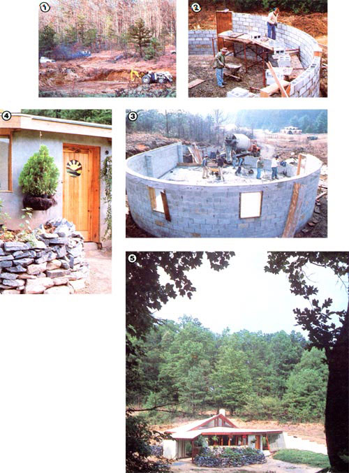

STAFF PHOTOS
[1] The excavation for our earth-sheltered home was dug with a front loader and a backhoe on our Ford tractor. [2] Laying block in an arc proved to beeasier than we'd expected. [3] But pouring the slab was made a bit more difficult by our decision to do so after the walls were up. [4] Our earth shelter's inviting front entrance. The door was made by Dean Davis, and the stained glass by Kay Herndon. [5] A view of the house from the hillside to the southwest.